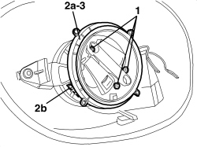

7005R36 DOOR MIRROR ADJUSTMENT MOTOR (ONE), LEFT OR RIGHT - R.R
- Path
- Procedures > 70 FITTINGS > 7005 PASSENGER COMPARTMENT FRONT SIDE DOORS > 7005R FRONT DOOR MIRRORS > 7005R36 DOOR MIRROR ADJUSTMENT MOTOR (ONE), LEFT OR RIGHT - R.R
- Kind
- repair procedure (removal / refitting; the operation number is the code)
- Applies to
- all engines; all production periods
- Interactive page
- https://sloeber94.github.io/elrnDB-aBrrSpdr/en/#/946002537
Applies to: all engines; all production periods
 Removing
Removing
 Refitting
RefittingOp. 7005R35 DOOR MIRROR REFLECTOR (ONE), LEFT OR RIGHT - R.R
1. Undo the motor fixing bolts.
2. Move the motor (2a) slightly and disconnect the electrical connection (2b).
3. Keep the motor.

Applies to: all engines; all production periods
Refitting
Removing- Check that the motor is not damaged.
- Connect the electrical connection for the motor.
- Position the motor and tighten the fixing bolts.
Op. 7005R35 DOOR MIRROR REFLECTOR (ONE), LEFT OR RIGHT - R.R